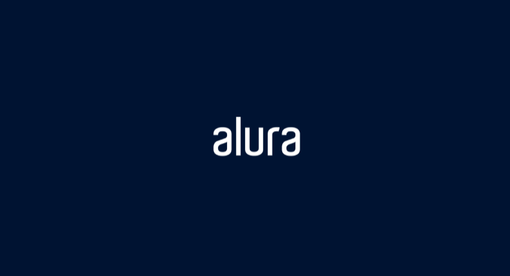

20 de Setembro de 2021
Imersão Dev

O evento de programação Imersão Dev proporcionado pela Alura foi um
evento especial pois foi nele onde tive uma das minhas primeiras
experiências com JavaScript, desde a segunda aula tinha um desafio em
javascript utilizando seus fundamentos como as variáveis, funções,
laços de repetições, arrays...